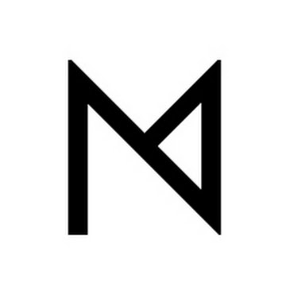

What is NotiManager?
When viewing notifications, do you struggle to prioritize the ones you want to see first?
How often do you face the frustration of not finding notifications you've previously viewed?
Here, we provide a solution for you.
NotiManager is your intelligent notification manager that automatically helps you sort and categorize notifications
Simultaneously, you retain control over these notifications.
In NotiManager, you have the flexibility to manually pin, sort, and categorize any notification according to your preferences.
Pinning
By pinning notifications, users can keep notifications remain visible, unaffected by any actions such as clicking, swiping off, or pressing delete-all-notifications button. The pinned notification can only be removed after deselecting the pin.
Sorting
Notifications are automatically sorted upon arrival, leveraging our machine learning model to predict the preferred order for users. For those who desire more control, NotiManager offers manual adjustments — simply drag and drop notifications to personalize the sequence. NotiManager remembers these customizations, maintaining the positions of manually adjusted notifications.
Categorization
When a notification arrives, it will be automatically assigned to a category based on the app category of the notification. Users have the option to manually add notifications to a category. They can filter notifications they want to view or handle by clicking into a specific category, allowing for a more refined experience compared to viewing all notifications
Manual + Automated
NotiManager is a hybrid system incorporating both manual and automated features, designed to strike a balance between flexibility and efficiency. Users have the freedom to choose the approach that best suits their preferences.
Why should you consider using NotiManager?
üëâüèª To focus on the current task or activity
üëâüèª To defer notificaiton to convenient time / spare time / post-context / more suitable device
üëâüèª To locate the notification more quickly in the future
üëâüèª To label and filter notification for later processing
üëâüèª To retain information for future reference
üëâüèª To view the full content of the notification without having it deleted
üëâüèª To prevent the notification from being accidentally deleted
In our mix-methods study, we learned:
üéØ How often, if at all, will users utilize sorting, categorization, and pinning in a notification interface
when it is made available to them?
üéØ What are users‚Äô perceptions of the usefulness of these three features, separately and collectively?
üéØ Do users find manual or automatic sorting and categorization more helpful?
Want to see more about how we conducted this study?
Check out our publications üëÄ
Highlighted Findings
For pinning:
✨ Compared to snooze, a feature already used in the current notification system for deferring notifications, pinning had comparative advantages, including 1) enabling the taking of quick, simple actions without the need for deliberation and 2) obviating the need for pre-scheduled re-engagement.
✨ Deferring notifications until a more convenient time, enabling easier future access to the information contained within notifications, and preventing accidental removal of notifications were the key reasons for using pinning in our study.
✨ A major user behavior pattern regarding pinning is to pin before carefully assessing notifications. This serves as an intuitive workaround to address problems related to accidental deletions of notifications (which are dismissed upon interaction) and allows for worry-free initial assessments of whether further action is needed.
✨ The different reasons for pinning are associated with distinct durations for which the notifications remain pinned.
✨ Deferring notifications until a more convenient time, enabling easier future access to the information contained within notifications, and preventing accidental removal of notifications were the key reasons for using pinning in our study.
✨ A major user behavior pattern regarding pinning is to pin before carefully assessing notifications. This serves as an intuitive workaround to address problems related to accidental deletions of notifications (which are dismissed upon interaction) and allows for worry-free initial assessments of whether further action is needed.
✨ The different reasons for pinning are associated with distinct durations for which the notifications remain pinned.
For sorting:
✨ The automatically sorted sequences did not work as well as expected for our participants. Possible reasons include the limited features of our training model, which lacks broader contextual information and generalizability. Additionally, some of our participants tended to skim through their notifications, processing them swiftly, irrespective of their arrangement.
✨ Manual sorting was used in combination with the pinning function nearly one-fifth of the time.
✨ The positions to which participants manually sorted these notifications varied depending on their intent. Moving notifications to the top of the stack was generally to enhance their visibility and thus their utility as reminders. On the other hand, relegating notifications to lower positions often indicated that the user’s review of notifications was complete and user wants to make more ’screen real estate’ available for unread notifications.
✨ Manual sorting was used in combination with the pinning function nearly one-fifth of the time.
✨ The positions to which participants manually sorted these notifications varied depending on their intent. Moving notifications to the top of the stack was generally to enhance their visibility and thus their utility as reminders. On the other hand, relegating notifications to lower positions often indicated that the user’s review of notifications was complete and user wants to make more ’screen real estate’ available for unread notifications.
For categorization:
✨ Most of our participants did not perceive a need for additional categories to manage their notifications, especially when their systems already had an automatic categorization function. This contrasts with emails (as past research suggests for this kind of design), which can accumulate over months or years, necessitating more organizational features to streamline and categorize their content for efficient future retrieval.
A possible reason is that mobile users generally have an inclination to dismiss notifications as a (not always accurate) means of helping themselves feel that nothing important has been left undone.
✨ Our participants seldom used categorization to navigate through notifications because most notifications only required a quick scan, taking minimal time, and therefore did not warrant additional viewing steps.
✨ Automatic categorization is useful when users have many notifications in the drawer and need to find a specific type among them.
✨ Automatic categorization outcomes were deemed sufficient for many participants' needs, achieved through straightforward rules based on app-store categories rather than using machine learning.
✨ Our participants seldom used categorization to navigate through notifications because most notifications only required a quick scan, taking minimal time, and therefore did not warrant additional viewing steps.
✨ Automatic categorization is useful when users have many notifications in the drawer and need to find a specific type among them.
✨ Automatic categorization outcomes were deemed sufficient for many participants' needs, achieved through straightforward rules based on app-store categories rather than using machine learning.
Takeaways
If you are a ...
üë©ü誂Äçüíª Notification System Designer or Developer:
Our research suggests that future notification systems may incorporate features that allow for quick, risk-free assessment of notifications, and/or integrate capabilities that ensure that important information in notifications can be easily retrieved when needed. For example, features like pinning, manual sorting, and automatic categorization have shown effectiveness in our study, especially when used in combination. The remaining features in NotiManager (i.e., automatic sorting and manual categorization) are worth considering, although they were not shown to work effectively in our study. Our findings show recommendations on how to improve their design.
Our research suggests that future notification systems may incorporate features that allow for quick, risk-free assessment of notifications, and/or integrate capabilities that ensure that important information in notifications can be easily retrieved when needed. For example, features like pinning, manual sorting, and automatic categorization have shown effectiveness in our study, especially when used in combination. The remaining features in NotiManager (i.e., automatic sorting and manual categorization) are worth considering, although they were not shown to work effectively in our study. Our findings show recommendations on how to improve their design.
üë©ü誂Äçüî¨ Notification Researcher:
In our research, we contribute valuable empirical evidence to the field of notification research, offering guidelines for the design of more effective notification management systems. Based on the evidence from the current study, we do not recommend adding automatic sorting and manual categorization features. However, we encourage future research to continue exploring the circumstances under which smartphone users might find these features beneficial. In addition, there is potential for research applications to distinguish between users’ reasons for pinning based solely on pinning duration, eliminating the need for experience sampling method to determine user intent.
In our research, we contribute valuable empirical evidence to the field of notification research, offering guidelines for the design of more effective notification management systems. Based on the evidence from the current study, we do not recommend adding automatic sorting and manual categorization features. However, we encourage future research to continue exploring the circumstances under which smartphone users might find these features beneficial. In addition, there is potential for research applications to distinguish between users’ reasons for pinning based solely on pinning duration, eliminating the need for experience sampling method to determine user intent.
üôãü誂Äç‚ôÄÔ∏è Notification User:
Our findings provide valuable insights into our participants' experiences with features in NotiManager, offering a deeper understanding of the reasons and contexts for their usage. Our participants enjoy the three management features, with pinning being a standout favorite. Some participants have continued using NotiManager even after the study. Download our app now to explore and experience it for yourself!
Our findings provide valuable insights into our participants' experiences with features in NotiManager, offering a deeper understanding of the reasons and contexts for their usage. Our participants enjoy the three management features, with pinning being a standout favorite. Some participants have continued using NotiManager even after the study. Download our app now to explore and experience it for yourself!
Publications
Pinning, Sorting, and Categorizing Notifications: A Mixed-methods Usage and Experience Study of Mobile Notification-management Features
Yong-Han Lin, Li-Ting Su, Uei-Dar Chen, Yi-Chi Lee, Peng-Jui Wang, Yung-Ju Chang (Under Review)
Yong-Han Lin, Li-Ting Su, Uei-Dar Chen, Yi-Chi Lee, Peng-Jui Wang, Yung-Ju Chang (Under Review)
Automatic, Manual, or Hybrid? A Preliminary Investigation of Users’ Perception of Features for Supporting Notification Management
Yong-Han Lin, Li-Ting Su, Uei-Dar Chen, Peng-Jui Wang, Yi-Chi Lee, Yung-Ju Chang (UbiComp/ISWC '23)
PDF ‧ ACM Digital Library ‧ BibTex ‧ Reference
Yong-Han Lin, Li-Ting Su, Uei-Dar Chen, Peng-Jui Wang, Yi-Chi Lee, Yung-Ju Chang (UbiComp/ISWC '23)
PDF ‧ ACM Digital Library ‧ BibTex ‧ Reference
Get NotiManager Now

Download on Android Smartphone
Research Team
We are a group of graduate and undergraduate researchers from National Yang-Ming Chiao-Tung University's Mobile Ubiquitous Interaction Lab.

Yong-Han Lin
Li-Ting Su
Uei-Dar Chen
Yi-Chi Lee
Peng-Jui Wang
Yung-Ju Chang
We are working on releasing the app and code, please stay tuned!
If you have any question, contact us at intnoti@gmail.com
If you have any question, contact us at intnoti@gmail.com